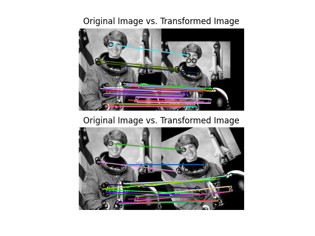

This example demonstrates the BRIEF binary description algorithm.
The descriptor consists of relatively few bits and can be computed using a set of intensity difference tests. The short binary descriptor results in low memory footprint and very efficient matching based on the Hamming distance metric.
BRIEF does not provide rotation-invariance. Scale-invariance can be achieved by detecting and extracting features at different scales.
from skimage import data
from skimage import transform as tf
from skimage.feature import (match_descriptors, corner_peaks, corner_harris,
plot_matches, BRIEF)
from skimage.color import rgb2gray
import matplotlib.pyplot as plt
img1 = rgb2gray(data.astronaut())
tform = tf.AffineTransform(scale=(1.2, 1.2), translation=(0, -100))
img2 = tf.warp(img1, tform)
img3 = tf.rotate(img1, 25)
keypoints1 = corner_peaks(corner_harris(img1), min_distance=5)
keypoints2 = corner_peaks(corner_harris(img2), min_distance=5)
keypoints3 = corner_peaks(corner_harris(img3), min_distance=5)
extractor = BRIEF()
extractor.extract(img1, keypoints1)
keypoints1 = keypoints1[extractor.mask]
descriptors1 = extractor.descriptors
extractor.extract(img2, keypoints2)
keypoints2 = keypoints2[extractor.mask]
descriptors2 = extractor.descriptors
extractor.extract(img3, keypoints3)
keypoints3 = keypoints3[extractor.mask]
descriptors3 = extractor.descriptors
matches12 = match_descriptors(descriptors1, descriptors2, cross_check=True)
matches13 = match_descriptors(descriptors1, descriptors3, cross_check=True)
fig, ax = plt.subplots(nrows=2, ncols=1)
plt.gray()
plot_matches(ax[0], img1, img2, keypoints1, keypoints2, matches12)
ax[0].axis('off')
plot_matches(ax[1], img1, img3, keypoints1, keypoints3, matches13)
ax[1].axis('off')
plt.show()
Total running time of the script: (0 minutes 0.342 seconds)
plot_brief.pyplot_brief.ipynb Source
Source